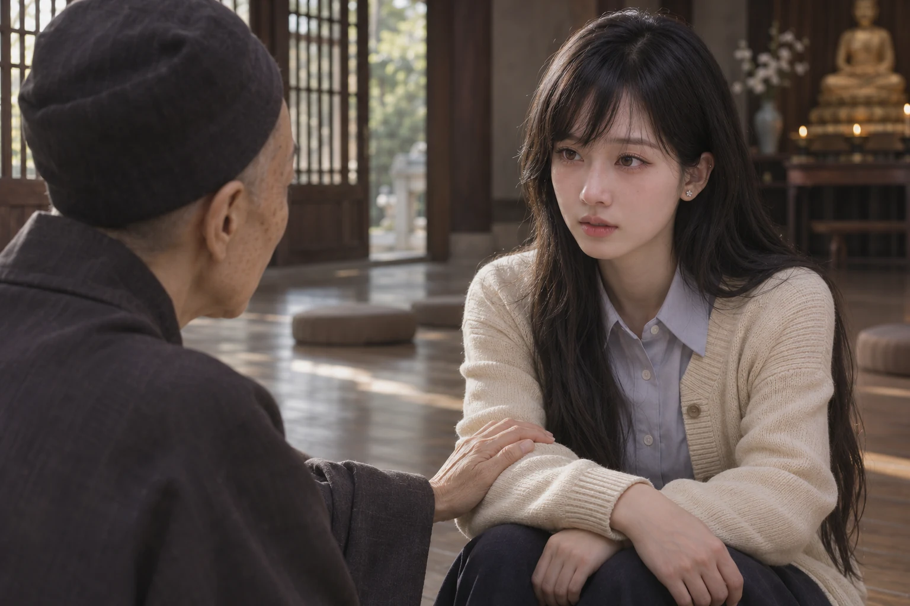
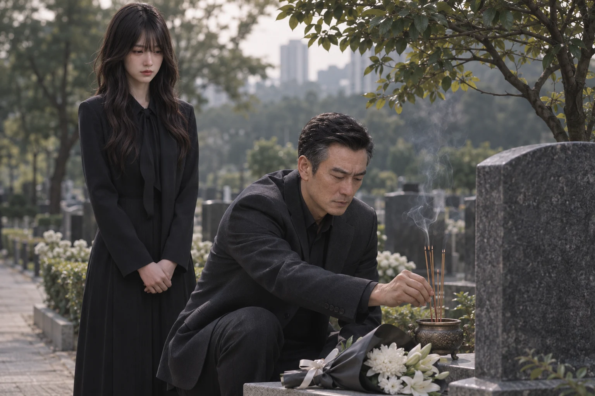
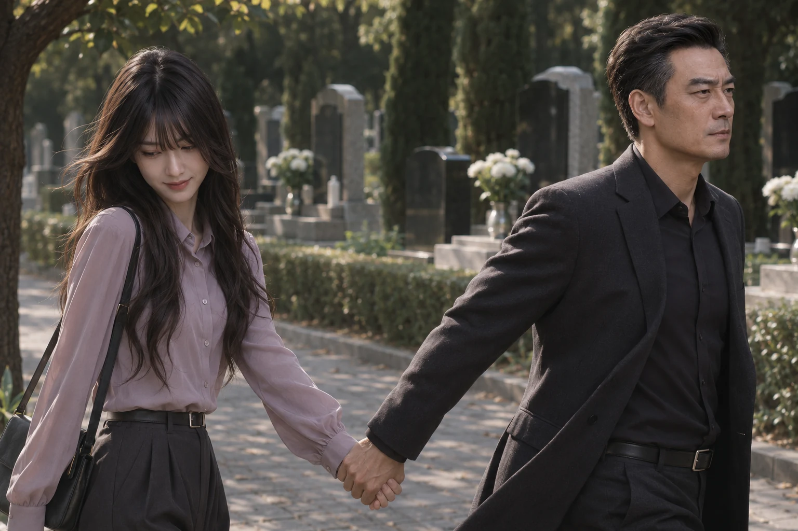
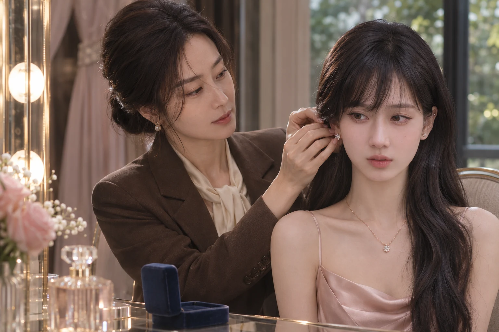
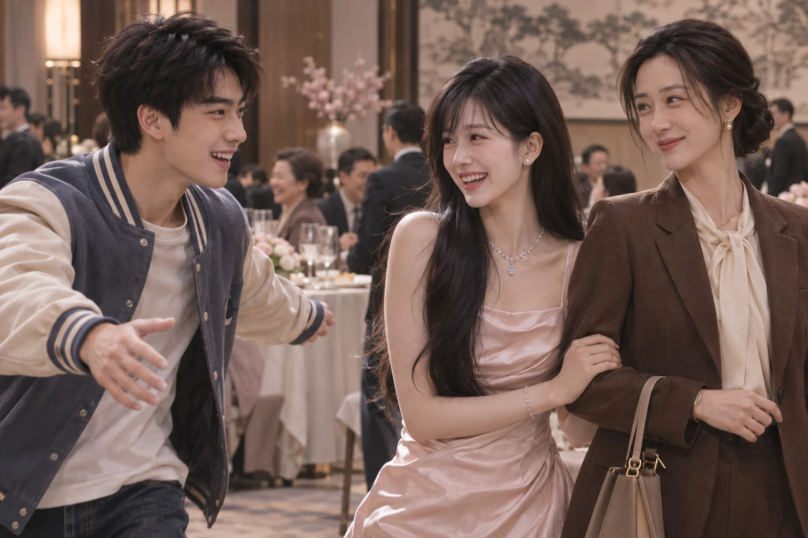

ตอนที่ 02
ลูกสาวนอกสมรส
“ไม่ต้องกลัวนะเสี่ยวอวิ๋น ตราบใดที่หลานมีสติ เราจะผ่านมันไปได้” น้ำเสียงนุ่มรื่นหู และอบอุ่นทำให้ความกระวนกระวายใจของซ่งอวิ๋นบรรเทาเบาบางลงมาก แต่เธออดสงสัยไม่ได้
“คุณย่าไม่ถามเหรอคะว่าหนูฝันเรื่องอะไร”
“ไม่ว่าหลานจะฝันอะไร ห้ามแพร่งพรายให้ใครฟังเด็ดขาด บ้านย่าเป็นนักทำนายดวงชะตา บางทีหลานอาจได้รับพรสวรรค์ด้านนี้ เลยฝันเป็นลางบอกเหตุ แต่ถ้าหลานเล่าให้คนอื่นฟัง ความฝันนั้นจะเปลี่ยนไป”
“มันจะเปลี่ยนไปในทางที่ไม่ดีเหรอคะ”
“ใช่ หลานรักษาเนื้อรักษาตัวให้ดีนะ ถ้าไม่ไหวจริง ๆ มาหาย่าที่นี่อีกครั้ง ย่าจะกลับบ้าน” จ้าวอิ๋นมีเรื่องที่ไม่ได้บอกหลานสาว สาเหตุที่ทำให้เธอต้องบวชตลอดชีวิต เป็นเพราะการแลกเปลี่ยนที่มีราคาต้องจ่ายเป็นจำนวนมหาศาล

และเธอเองก็หวังว่าราคาที่ต้องจ่ายในครั้งนี้จะคุ้มค่า เธอไม่ต้องการเห็นตระกูลซ่งล่มจม บ้านแตกสาแหรกขาด เพียงเพราะความแค้นไม่บันยะบันยังของคนคนหนึ่ง
“หนู.. เข้าใจแล้วค่ะ”
ภายในเวลาหนึ่งวัน ซ่งอวิ๋นรู้สึกว่าตัวเองเติบโตขึ้นอย่างก้าวกระโดด ความหวังที่ความฝันจะไม่เป็นจริงคงสลายไปแล้ว ตอนนี้ทำให้เพียงรอรับมือเท่านั้น
ท่านผู้เฒ่าซ่งพูดคุย และถามไถ่สารทุกข์สุกดิบกับภรรยาทางพฤตินัยของตัวเองอยู่ครึ่งค่อนวันอย่างเช่นทุกครั้ง แต่ครั้งนี้แม่ชีจ้าวพูดแปลกไป คล้ายเป็นการเตือนอย่างหนึ่ง
“อยู่ดูแลประคับประคองหลานก่อนนะ”
“พูดอย่างกับว่าฉันจะตายเร็ว ๆ นี้อย่างนั้นแหละ”
“กลับบ้านได้แล้ว จะจัดวันเกิดให้อาอวิ๋นไม่ใช่เหรอ ชักช้าเดี๋ยวหลานน้อยใจนะ” แม่ชีจ้าวเปลี่ยนเรื่องเสียดื้อ ๆ ซ่งเต๋อจึงเกิดลางสังหรณ์แปลก ๆ ในใจ เขาสบตาจ้าวอิ๋นวูบหนึ่ง ก่อนพยักหน้ารับ เดินทางกลับบ้านพร้อมความรู้สึกหนักอึ้ง
...
ซ่งเหวินคุกเข่าอยู่ด้านหน้าป้ายหลุมศพ ภายในสุสานขนาดกลางทางตอนใต้ของเมือง ดวงตาคมแดงเรื่อ เขาขบกรามข่มกลั้นความเจ็บปวด มือสั่นเทาปักธูปลงบนกระถาง
ข้างกายเขาคือหญิงสาววัย 18 ปี ‘ซ่งหว่าน’ ร่างกายบอบบาง ผิวพรรณขาวนวลดุจไข่ปลอก ทว่าเธอมีดวงตาหงส์ฉลาดเฉลียวเป็นเอกลักษณ์เหมือนมารดาผู้ล่วงลับ

ซ่งเหวินเหลียวมองลูกสาวคนโต ในสายตาเขา ซ่งหว่านสุขุม รู้ความและฉลาดเกินวัยมาตั้งแต่ไหนแต่ไร เพราะต้องอยู่กับแม่เพียงสองคนมาตลอด ซึ่งตอนนี้ลูกไม่เหลือใครแล้ว มารดาเสียชีวิต ไร้ญาติขาดมิตร หากเขาไม่พาเข้าบ้านซ่ง ลูกก็ต้องระหกระเหเร่ร่อนไร้ที่พึ่งพิง
“เสี่ยวหว่าน.. กลับบ้านกับพ่อนะ”
“อย่าดีกว่าค่ะพ่อ ถ้าครอบครัวของพ่อรู้เรื่องนี้ ต้องกลายเป็นเรื่องใหญ่แน่ ๆ อีกอย่างหนูโตแล้ว ดูแลตัวเองได้แล้วค่ะ” ซ่งหว่านพูดอย่างเข้าอกเข้าใจ ราวกับไม่โทษว่าเป็นเพราะความมักมากของพ่อ
ยิ่งซ่งหว่านรู้ความ ซ่งเหวินยิ่งปวดใจ “ลูกไม่โกรธพ่อบ้างเหรอ”
“ไม่หรอกค่ะ เรื่องของผู้ใหญ่ หนูทำอะไรไม่ได้ หนูก็แค่ไม่อยากก่อปัญหาเพิ่มด้วย” ซ่งหว่านหลุบตาลงมองมือที่ประสานไว้บนหน้าขา เก็บซ่อนความแค้นในดวงตามิดชิด
“กลับบ้านเถอะ ยังไงลูกก็มีสายเลือดตระกูลซ่ง ส่วนปัญหาที่จะตามมาพ่อจะรับผิดชอบการกระทำของตัวเอง” ซ่งเหวินสูดลมหายใจเข้าปอดลึก ๆ ดึงแขนบุตรสาวออกจากสุสาน
เขาปล่อยให้ลูกสาวคนโตน้อยเนื้อต่ำใจมากกว่านี้อีกไม่ได้แล้ว
“เดี๋ยวสิคะพ่อ วันนี้เป็นวันเกิดน้องรองไม่ใช่เหรอคะ อย่าเพิ่งกลับบ้านเลยค่ะ หนูไม่อยากทำลายวันดี ๆ ของน้องนะ” หญิงสาวพยายามดึงมือออกจากการเกาะกุม
“ไม่เป็นไร พ่อจะประกาศการมีอยู่ของลูกต่อหน้าทุกคน น้องเป็นเด็กดี พ่อเชื่อว่าถึงจะเสียใจ แต่น้องจะเข้าใจ” ซ่งเหวินไม่ฟังคำทัดทานของลูกสาว
ความเสียใจจากการสูญเสียภรรยารัก ทำให้เขาทำอะไรโดยไม่ยั้งคิด ยิ่งเห็นและได้ยินการกระทำและคำพูดอันแสนเจียมตัวของลูกสาวคนโต เขายิ่งทนไม่ได้หากต้องปล่อยให้ซ่งหว่านน้อยเนื้อต่ำใจ
ซ่งหว่านลอบยิ้มมุมปาก เลิกขัดขืนแล้วเดินตามแรงจูงด้วยท่าทางคล้ายไม่เต็มใจมากเท่าไหร่นัก

ซ่งเหวินเตรียมใจเผชิญพายุลูกใหญ่ระหว่างขับรถกลับบ้าน ท้องฟ้าค่อย ๆ เริ่มเปลี่ยนสี ใกล้ถึงเวลาจัดงานวันเกิดเต็มที ภรรยาโทรมาหาเขาแล้วรอบหนึ่ง เมื่อเขาบอกว่าใกล้ถึงบ้าน เธอก็เบาใจลง
...
ซ่งอวิ๋นนั่งหน้ากระจก เป็นตุ๊กตาให้แม่นมและพี่เลี้ยงจับแต่งตัวแต่งหน้า ภายนอกทำเหมือนไม่มีอะไร แต่ในใจเธอคิดอยู่หลายตลบ เตรียมใจว่าสิ่งที่เห็นในความฝันกำลังจะเกิดขึ้น
“เสี่ยวอวิ๋น แต่งตัวเสร็จหรือยังลูก” คุณนายใหญ่ซ่งเข้าห้องแต่งตัวมาพร้อมกล่องกำมะหยี่สีน้ำเงินในมือ
“เรียบร้อยแล้วค่ะนายหญิงใหญ่” แม่นมสูงวัยตอบแล้วก็หลบฉากเพื่อปล่อยให้สองแม่ลูกพูดคุยกันเป็นการส่วนตัว
“ไหนดูซิ โอ้โห ลูกสาวแม่สวยจริง ๆ”
วันนี้ลูกสาวเธอสวมชุดเดรสสั้นสายเดี่ยวสีชมพูอ่อน ตัดเย็บจากผ้าซาตินเนื้อลื่น ทิ้งตัวพลิ้วเบาอย่างเป็นธรรมชาติ กระโปรงยาวเหนือเข่าเล็กน้อย ขับลุคให้ดูอ่อนหวานและสง่างาม
“เพราะแม่ของหนูสวยมาก หนูเลยได้ยีนเด่นของแม่มาเต็ม ๆ เลยไงคะ” ซ่งอวิ๋นเอ่ยติดตลก
“ปากหวานเชียวนะเรา.. จริงสิ เครื่องประดับเพชรสีโรสโกลด์นี้เข้ากับชุดที่ลูกใส่นะ เดี๋ยวแม่สวมสร้อยกับต่างหูให้”
“ขอบคุณค่ะแม่.. แต่หนูไม่เคยเห็นเครื่องประดับชุดนี้เลย แม่ซื้อมาใหม่เหรอคะ”
“เป็นของคุณย่าน่ะ ท่านให้แม่ไว้นานแล้ว แต่แม่ว่าการออกแบบดูวัยรุ่นเกินไปสักหน่อย ดูสิ ลูกใส่แล้วสวยเข้ากับอายุเลยเห็นไหม ตอนไฟในงานวันเกิดส่องลงมา ต้องสวยระยิบระยับมากแน่ ๆ”
ซ่งอวิ๋นอมยิ้มแก้มพอง แม่ของเธอชมไม่ขาดปาก ท่านเป็นเช่นนี้มาตั้งแต่จำความได้ โชคดีแค่ไหนแล้วที่เธอไม่โดนตามใจจนเสียคน
“แม่คะ หนูมีเรื่องอยากถามค่ะ”
“หืม? มีอะไรเหรอ” โจวจิ่วสวมต่างหูให้ลูกสาวอย่างระมัดระวัง ขณะตั้งใจฟังสิ่งที่อีกฝ่ายอยากรู้

“ถ้าแม่จับได้ว่าที่ผ่านมาพ่อไม่ซื่อสัตย์ แม่จะทำยังไงเหรอคะ” ซ่งอวิ๋นกลั้นใจถามมารดา รอดูท่าทีโดยตาไม่กะพริบ
ในฝันแม่ของเธอเสียศูนย์มาก ทุกอย่างถาโถมจนท่านล้มป่วย แทบหมดกำลังใจในการใช้ชีวิต มือโจวจิ่วชะงักค้างกลางอากาศ เธอเงียบไปนิด เพราะเรื่องเหล่านี้ไม่เคยมีอยู่ในสมองเลยแม้แต่น้อย ในสายตาเธอ สามีเป็นคนอบอุ่น รักครอบครัว ไม่มีใครเหมาะกับคำว่า Family man ไปมากกว่าเขาอีกแล้ว
“ถามอะไรของลูกเนี่ย พ่อเขาไม่มีทางหักหลังแม่หรอกนะ” เธอตีแขนลูกสาวเบา ๆ คำพูดทุกคำหนักแน่นดุจหินผา บ่งบอกถึงความเชื่อใจที่เธอมีต่อสามี
“โธ่ แม่คะ หนูแค่สมมุติเท่านั้นเอง”
“ไม่มีใครรู้หรอกลูกว่าถึงเวลานั้นจะทำยังไง แต่แม่คงเสียใจมากถ้ารู้ว่าที่ผ่านมาพ่อหักหลังแม่มาตลอด แม่ยอมเขามาบอกว่าไม่รักกันแล้วเลิกรากันด้วยดี ยังดีกว่ารู้ว่าเขาทรยศความเชื่อใจที่แม่มอบให้”
ซ่งอวิ๋นพยักหน้ารับ ความรู้สึกหนักอึ้งไม่ต่างจากการถูกภูเขาลูกใหญ่กดทับอยู่บนบ่า
“เอาล่ะ ไม่พูดเรื่องพวกนี้แล้ว งานเลี้ยงวันเกิดจะเริ่มแล้ว รีบลงไปที่ห้องโถงจัดงานกับแม่ดีกว่า”
“เข้าใจแล้วค่ะแม่” ซ่งอวิ๋นกอดแขนมารดาตรงไปยังห้องโถงจัดงานเลี้ยงขนาดใหญ่ภายในบ้าน
ท่านผู้เฒ่าซ่งนั่งรอท่าอยู่ที่โต๊ะประธาน แขกเหรื่อที่ถูกเชิญมาส่วนมากจะเป็นพันธมิตรทางธุรกิจและคนสนิท เป็นงานเลี้ยงเล็ก ๆ เพียงห้าสิบคน ไม่ใช่ว่าคนสนิทและคู่ค้ามีมากมาย แต่เพราะพวกเขานำครอบครัวมาด้วย แขกเหรื่อจึงอยู่ภายในห้องจัดงานเลี้ยงร่วมห้าสิบคน
“คุณพ่อคะ ทำไมฉันไม่เห็นพี่ใหญ่เลย เขาหายไปไหน งานจะเริ่มแล้วแท้ ๆ”
ซ่งเซียง ลูกสาวคนรองของนายท่านผู้เฒ่า เธอแต่งออกไปกับสามีตระกูลเจียง ให้กำเนิดลูกชายสองคน เจียงซู อายุยี่สิบสองปี และเจียงเซิน อายุยี่สิบปี
“เห็นว่ากำลังมานะ อาซู อาเซิน ถ้าหิวก็เดินไปหาอะไรกินก่อนได้เลยนะ อาจื้อก็ด้วย” ชายชราไม่ลืมหันไปบอกหลานชายคนเล็ก
“ยังไม่หิวเลยครับคุณปู่ ผมอยากรอพี่สาม”
ซ่งจื้อ อายุสิบหกปี ลูกชายเพียงคนเดียวของนายท่านสาม ซ่งเซวียน ครอบครัวซ่งมีสมาชิกอยู่เพียงเท่านี้ จะว่าเยอะก็เยอะ จะว่าน้อยก็น้อย เพราะทุกคนต่างแยกบ้านออกไปหมดแล้ว จะกลับมารวมตัวกันอย่างพร้อมหน้าพร้อมตาเฉพาะวันรวมญาติ และงานวันเกิดเท่านั้น
“นั่นไง เสี่ยวอวิ๋นมาแล้ว” นายท่านสามซ่งเซวียนผู้มีดวงตาอ่อนโยนถอดแบบมารดามาทุกกระเบียดนิ้ว ยิ้มตาปิดเมื่อหลานสาวเข้ามาในห้องจัดเลี้ยงพร้อมพี่สะใภ้
“พี่สาม” ซ่งจื้อยิ้มร่า กึ่งวิ่งกึ่งกระโดดเข้าไปหาพี่สาว ท่าทางเขาดูเหมือนลูกสุนัขยามพบเจอเจ้าของ

“ให้ตายสิ โตป่านนี้แล้วยังทำตัวเหมือนเด็ก ๆ ไม่เปลี่ยนเลย” ซ่งเซวียนนวดขมับให้กับท่าทางร่าเริงไร้ความสุขุมของลูกชาย
“เอาเถอะน่า น้องสามดูเจ้าสองคนนี้ก่อน ถ้าวิ่งตามออกไปได้คงวิ่งไปแล้ว” ซ่งเซียงกลั้วหัวเราะขบขัน เอ่ยเย้าลูกชายที่ดูกระตือรือร้นแทบเก็บอาการไม่อยู่
“ฮ่า ๆ เป็นแบบนี้ตั้งแต่เด็กจนโตเลยจริง ๆ เจ้าพวกนี้”
ผู้เฒ่ามองความกลมเกลียวของลูกหลาน นึกไม่ออกเลยว่าทำไมภรรยาถึงมีคำเตือนแปลก ๆ แน่นอนเขาไม่กลัวความตาย แต่การให้อยู่ปกป้องหลานนี่หมายความว่าอย่างไร เขาไม่เห็นว่าจะมีหลานคนใดตกอยู่ในอันตรายเลย